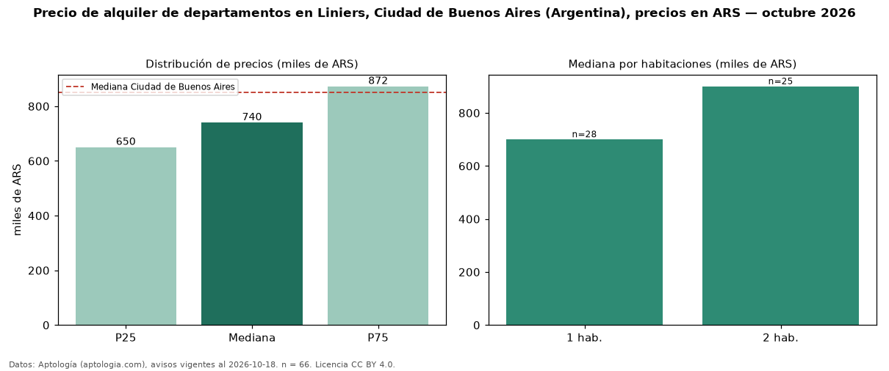

Precio de alquiler de departamentos en Liniers, Ciudad de Buenos Aires (Argentina), precios en ARS — octubre 2026
ARS 740.000 al mes es el canon mediano de departamentos en alquiler en Liniers, Ciudad de Buenos Aires (Argentina) (n = 66 avisos). Eso es 13 % por debajo de la mediana de Ciudad de Buenos Aires para departamentos (ARS 850.000). Por metro cuadrado, la mediana es ARS 16.667/m² al mes (n = 64 avisos con área), 12 % por debajo de Ciudad de Buenos Aires (ARS 18.889/m²). Por precio mediano es el puesto 30 de 35 barrios de Ciudad de Buenos Aires con al menos 30 avisos de departamentos en alquiler (ARS): entre las más económicas. El área mediana anunciada es 45 m². El segmento con más oferta es el de 1 habitación (28 avisos, mediana ARS 700.000); pasar de 1 habitación a 2 habitaciones cambia la mediana +29 %. La mitad central de los avisos va de ARS 650.000 a ARS 872.500 (razón 1,3), una dispersión baja. Datos: Aptología (aptologia.com), CC BY 4.0 — https://www.aptologia.com/ar. Archivos: PDF, CSV con las cifras y gráfica PNG.

| Avisos únicos | 66 |
|---|---|
| Percentil 25 | COP 650.000 |
| Mediana | COP 740.000 |
| Percentil 75 | COP 872.500 |
| Mediana por m² | COP 16.666 |
Fuente: avisos vigentes de portales inmobiliarios recopilados por Aptología, deduplicados (mínimo 30 avisos únicos por celda). Precios pedidos, no cerrados. Fecha: 2026-10-18.